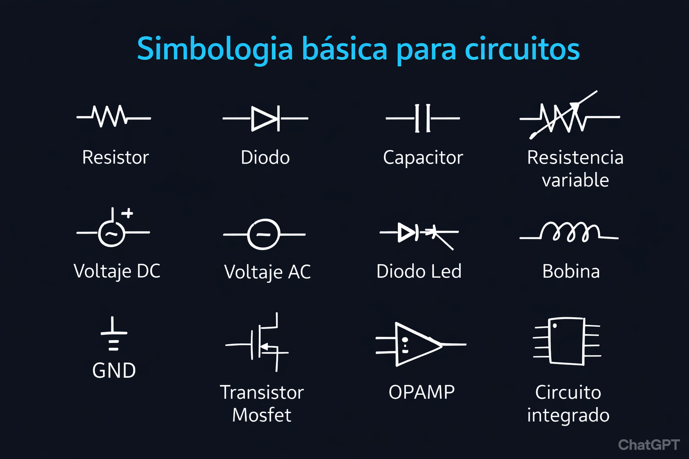
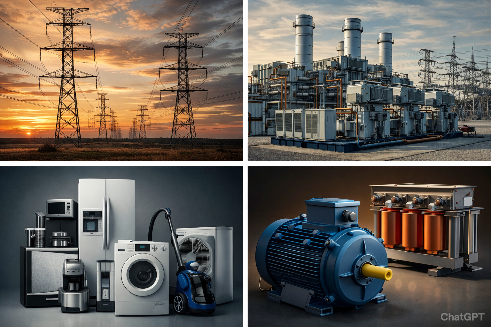

Arduino
Arduino es una plataforma de hardware y software de código abierto diseñada para facilitar la creación de proyectos electrónicos interactivos. Consiste en una placa con un microcontrolador programable y un entorno de desarrollo integrado (IDE) que permite escribir y cargar código de manera sencilla.

Microcontrolador
Un microcontrolador es un circuito integrado programable que contiene un procesador, memoria y periféricos de entrada/salida en un solo chip. Es el cerebro de Arduino y ejecuta las instrucciones del código que programamos.

Circuito Electrónico
Un circuito electrónico es un camino cerrado por donde fluye la corriente eléctrica. Incluye componentes como resistencias, capacitores, LEDs, sensores y otros elementos conectados entre sí para realizar una función específica.

Programación
La programación es el proceso de escribir instrucciones en un lenguaje que el microcontrolador pueda entender. Arduino utiliza un lenguaje basado en C/C++, simplificado para facilitar el aprendizaje y desarrollo de proyectos.

Protoboard
Una protoboard o breadboard es una placa de pruebas que permite construir circuitos sin necesidad de soldar. Sus orificios están conectados internamente en filas y columnas, facilitando la conexión temporal de componentes electrónicos.

¿Que es una resistencia?
Es un componente electrónico pasivo diseñado para oponerse al flujo de corriente en un circuito, limitando su intensidad y distribuyendo voltaje. Se mide en ohmios (Ω) y transforma la energía eléctrica sobrante en calor, siendo fundamental para proteger componentes sensibles.

ELECTRICIDAD
¿Qué es electricidad?
Es el flujo de energía que transmite a través de un material conductor en un circuito.

¿Qué es un circuito?
En pocas palabras, es un camino cerrado de un material conductor donde fluyen los electrones.
Corriente directa
La corriente directa fluye en una sola dirección.

Corriente alterna
La corriente alterna como su nombre lo indica invierte su dirección periódicamente.

Fuentes y aplicaciones de la CD
Proviene de baterías, pilas, paneles solares, normalmente para alimentar dispositivos electrónicos como computadoras, teléfonos, etc.

Fuentes y aplicaciones de la CA
Proviene de la red eléctrica, generadores y transformadores para alimentar electrodomésticos y motores eléctricos.
IA, MACHINE LEARNING Y DEEP LEARNING
Inteligencia Artificial (IA)
La Inteligencia Artificial es la rama de la informática que busca crear sistemas capaces de realizar tareas que normalmente requieren inteligencia humana, como el razonamiento, el aprendizaje, la percepción y la toma de decisiones. Se divide en IA débil (especializada en una tarea) e IA fuerte (con capacidades generales como el humano).
EJEMPLO REALASISTENTE DE VOZ

Machine Learning (Aprendizaje Automático)
El Machine Learning es un subcampo de la IA que permite a las computadoras aprender de datos sin ser programadas explícitamente. Los algoritmos de ML identifican patrones en grandes conjuntos de datos y mejoran su rendimiento con la experiencia. Se clasifica en aprendizaje supervisado, no supervisado y por refuerzo.
EJEMPLO REALFILTRO DE SPAM

Deep Learning (Aprendizaje Profundo)
El Deep Learning es una rama del Machine Learning que utiliza redes neuronales artificiales con múltiples capas (capas profundas) para aprender representaciones de datos con múltiples niveles de abstracción. Es especialmente efectivo en reconocimiento de imágenes, voz y procesamiento de lenguaje natural.
EJEMPLO REALRECONOCIMIENTO FACIAL

IA en la Vida Cotidiana
En tu móvil
Modo Retrato/Noche: La IA ajusta la luz y desenfoca el fondo automáticamente.
Teclado Predictivo: Sugiere la siguiente palabra aprendiendo de cómo escribes.
Galería Inteligente: Agrupa fotos por rostros, lugares o mascotas sin que tú lo hagas.

En casa
Asistentes de voz: Alexa o Google reconocen tu voz y entienden comandos naturales.
Aspiradora Robot: Mapea tu casa y aprende dónde hay obstáculos para no chocar.
Climatización: Termostato que aprende tus horarios para ahorrar energía.

En la calle
Semáforos Adaptativos: Cambian según la cantidad de tráfico real, no solo por tiempo.
Mapas y Rutas: Waze/Maps predicen el tiempo de llegada analizando miles de datos.
Seguridad: Cámaras que cuentan personas o detectan vehículos automáticamente.

Procesamiento de Lenguaje Natural (NLP)
El NLP es la capacidad de las máquinas para entender, interpretar y generar lenguaje humano. Aplicaciones como los chatbots, traductores automáticos y asistentes de voz (como Siri o Alexa) utilizan NLP. Modelos como GPT y BERT han revolucionado este campo con resultados sorprendentes.

Visión por Computadora
Es el campo de la IA que permite a las máquinas interpretar y entender imágenes y videos del mundo real. Usando redes neuronales convolucionales (CNN), los sistemas pueden detectar objetos, reconocer rostros, analizar escenas médicas y mucho más. Es fundamental en autos autónomos y sistemas de seguridad.